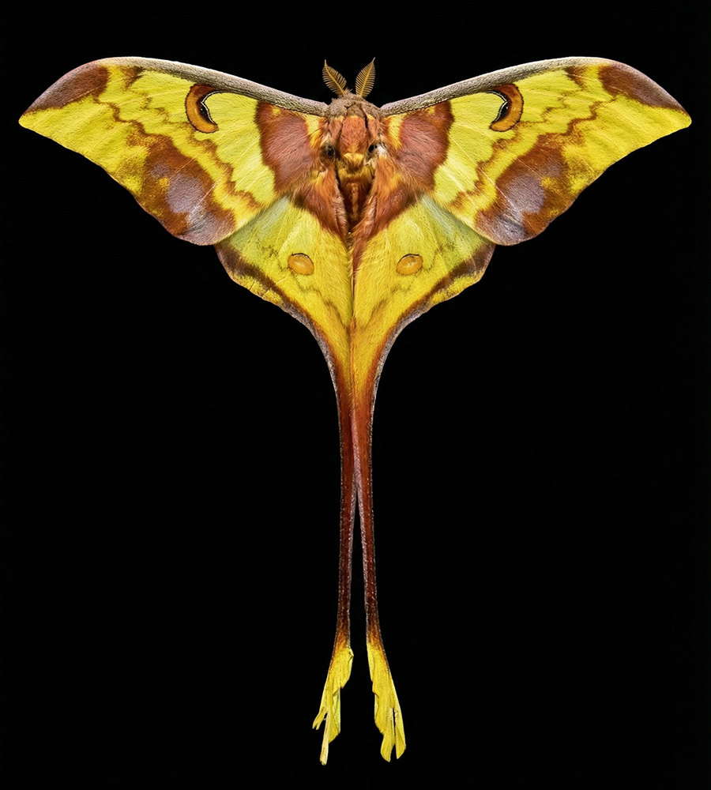

分布:
马来西亚、南亚与东南亚地区
栖息环境:
亚热带与热带森林
生命特征:
夜行性 · 季节性出现
生态属性:
亦称“马来西亚月蛾”，幼虫取食多种阔叶乔木
Distribution:
Malaysia · South and Southeast Asia
Habitat:
Subtropical and tropical forests
Life Pattern:
Nocturnal · Seasonal emergence
Ecological Note:
Also known as the Malaysia Moon Moth
Larvae feed on a variety of broadleaf trees.